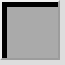
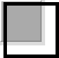
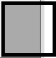

在 HTML 4.01 中，BUTTON 元素使浏览器渲染出一个与 "type=button/submit/reset" 的 INPUT 元素类似的按钮控件。但不同的是，BUTTON 元素可以包含内容，我们可以在按钮上添加更丰富的信息，如图片等。
同时这也引出了一个问题，对于 BUTTON 元素的子元素的尺寸溢出 BUTTON 本身时该如何处理。这一点，W3C 规范并没有很明确的说明，所以各浏览器产生了不同的渲染效果。
关于 BUTTON 元素的详细信息，请参考 HTML4.01 规范 17.5 中的内容。
由于 BUTTON 标记内部可以嵌套其他 HTML 标记，相关规范中没有对其子元素内容溢出 BUTTON 时的情况做明确说明。这导致在 Firefox Opera 中，若 BUTTON 元素的子元素溢出 BUTTON 容器本身时，子元素溢出部分可以在按钮外被渲染。
在使用 BUTTON 元素做按钮时，若对其以及其内子元素的宽高尺寸设置不当，迫使其子元素尺寸超过 BUTTON 本身时，在各浏览器中的渲染效果会有差异。
而且若 BUTTON 元素的容器设置有 "overflow:auto"，则在 Firefox 及 Opera 中可能出现多余的滚动条。
| Firefox Opera |
|---|
分析以下代码：
<div style="width:65px; height:65px; background:#DDD;"> <button
style="width:60px; height:60px; background:#AAA; padding:0;"> <div
style="width:70px; height:70px; border:5px solid;"></div> </button>
</div>
上面代码中按钮的尺寸为 60x60，其内部包含了一个 70x70 的 DIV 元素。
这段代码在不同浏览器中运行结果如下：
| IE6 IE7 IE8 Chrome Safari | Firefox Opera(S)1 | Opera(Q)1 |
|---|---|---|
|  |  |  |
可见：
【注】
1. Firefox 中 BUTTON 元素的点击事件仍只能在其尺寸之内响应；在 Opera 中点击其子元素溢出区域也可以响应 BUTTON 的点击事件。
合理的设置 BUTTON 及其子元素的宽度及高度，避免出现子元素溢出 BUTTON 的情况。
| 操作系统版本: | Windows 7 Ultimate build 7600 |
|---|---|
| 浏览器版本: |
IE6
IE7 IE8 Firefox 3.6.3 Chrome 5.0.396.0 dev Safari 4.0.5 Opera 10.53 |
| 测试页面: | button_overflow.html |
| 本文更新时间: | 2010-06-22 |
BUTTON overflow 按钮 溢出